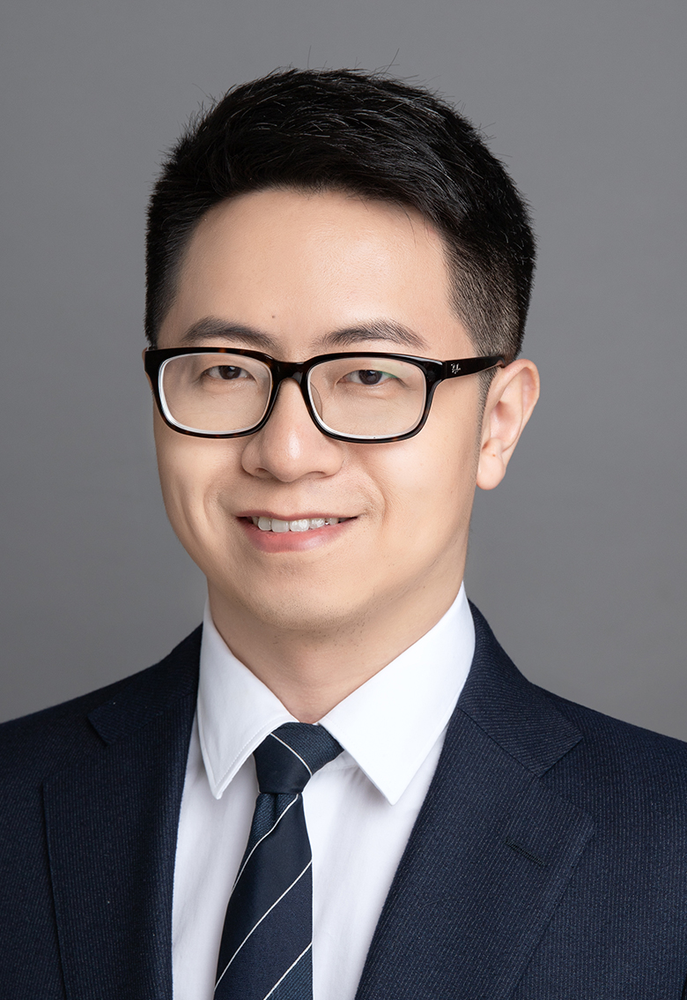

Zhifan Gao
|  |
Zhifan Gao
Postdoc in Computer Vision and AI-aided Disease Diagnosis
Schulich School of Medicine & Dentistry
Western University
Office: E5-137, 268 Grosvenor Street, London, ON, N6A 4V2, Canada
E-mail: zhifan.gao@outlook.com
[Google Scholar]
[ResearchGate]
|
I will join Sun Yat-sen University in this summer. I am a postdoc at the Schulich School of Medicine & Dentistry,
Western University (UWO), Canada, working with Prof.
Shuo Li.
I obtained the Ph.D. in Pattern Recognition and Intelligent Systems from
University of Chinese Academy of Sciences,
supervised by Prof. Yuan-Ting Zhang,
and M.Eng. and B.Sc. in Electronic and Information Engineering from
Huazhong University of Science and Technology, China.
News
12/2019, a paper on co-saliency detection accepted to IEEE IoT.
11/2019, a paper on learning physical properties of blood flow dynamics accepted to Neural Networks.
11/2019, a paper on intracoronary vessel border detection accepted to IEEE TMI.
09/2019, a paper on salient object detection accepted to IEEE Network.
09/2019, I won the Global Top Peer Reviewer Award endorsed by Publons.
08/2019, our paper was featured as the Cover Paper in IJACSP.
07/2019, a paper on learning-based quasi-static ultrasound elastography accepted to Medical Image Analysis.
06/2019, a paper on multi-modal intraocoronary image segmentation accepted to MICCAI 2019 (early acceptance) 11/2018. our three papers have been featured as ESI Highly Cited Paper.
07/2018, two papers accepted to BMVC 2018.
05/2018, two papers accepted to MICCAI 2018.
06/2018, I started working at the Western University as a postdoctoral fellow.
01/2018, a paper on cardiac deformation analysis accepted to IEEE JTEHM.
11/2017, a paper on carotid artery segmenation accepted to IEEE JBHI.
06/2017, I began to server as a reviewer of MICCAI.
05/2017, a paper on direct detection of mocardial infarction accepted to MICCAI 2017.
05/2017, I won the Special Prize of President Scholarship for Postgraduate Students awarded by Chinese Academy of Sciences (CAS).
06/2016, I won the Student Travel Award of MICCAI 2016.
04/2016, a paper accepted to MICCAI 2016.
06/2015, I won the Student Travel Award of MICCAI 2015.
05/2015, a paper on carotid motion estimation accepted to MICCAI 2015.
|